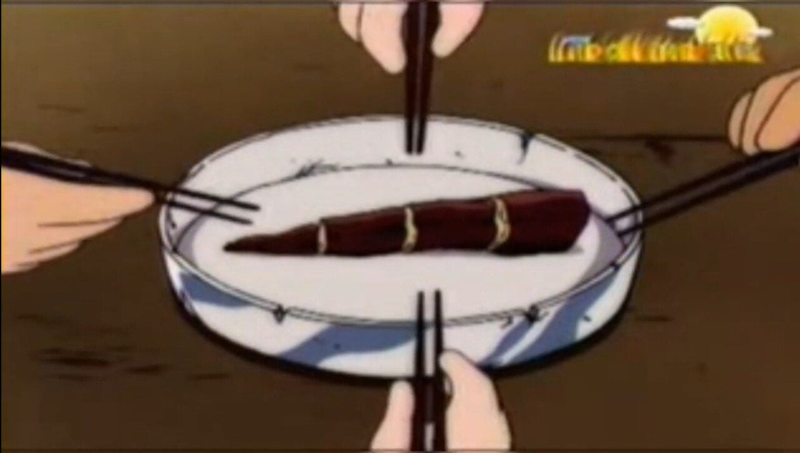
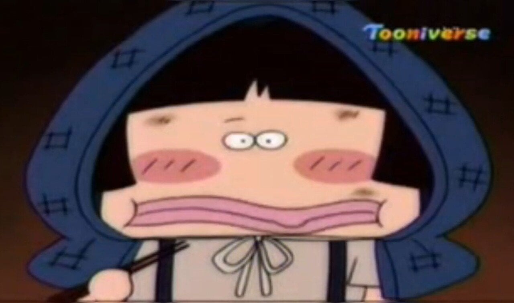
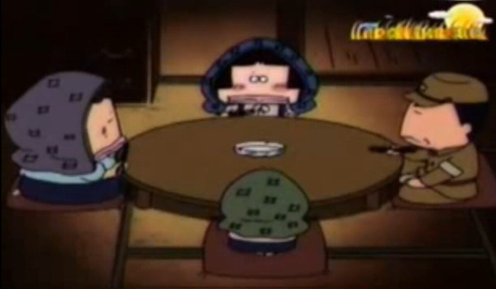

손가락만한 고구마를 4등분으로 나눠먹어야 했고

그걸 한참동안 씹어야함

심지어 아리 엄마의 부친 (아리의 외조부)는 군복을 입고 있는데다... 집안 여자들은 몸빼와 두건 같은 걸 착용하고 있음... ㄷㄷ
+
그러나 아리 아빠가 '당신은 전쟁 겪어본적 없잖아'라고 팩폭을 날려 전후 세대인게 밝혀짐 ㅅㅂㅋㅋㅋㅋㅋㅋㅋ
(설정상 아빠는 1944년 생, 엄마는 1949년 생임)
같이보기: https://www.dogdrip.net/730157656 (태평양 전쟁 시기 일본군의 전투모)
죽순 같은데...